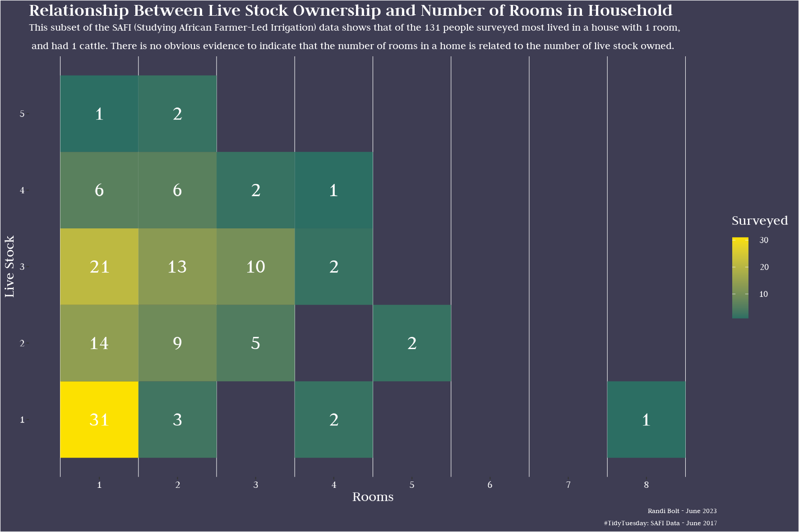

Explore a rich data set focused on understanding the role of farmer-led irrigation in Africa with my week 24 #TidyTuesday submission. In this post my visual delves into the relationship between livestock ownership and the number of rooms in a household.
CITATION: Woodhouse, Philip; Veldwisch, Gert Jan; Brockington, Daniel; Komakech, Hans C.; Manjichi, Angela; Venot, Jean-Philippe (2018): SAFI Survey Results. doi:10.6084/m9.figshare.6262019.v1
SAFI (Studying African Farmer-Led Irrigation) is a currently running project which is looking at farming and irrigation methods. This is survey data relating to households and agriculture in Tanzania and Mozambique. The survey data was collected through interviews conducted between November 2016 and June 2017 using forms downloaded to Android Smartphones. The survey forms were created using the ODK (Open Data Kit) software via an Excel spreadsheet. The collected data is then sent back to a central server. The server can be used to download the collected data in both JSON and CSV formats. This is a teaching version of the collected data that we will be using. It is not the full dataset.
The survey covered such things as; household features (e.g. construction materials used, number of household members), agricultural practices (e.g. water usage), assets (e.g. number and types of livestock) and details about the household members.
The basic teaching dataset used in these lessons is a subset of the JSON dataset that has been converted into CSV format.

Code
This week in the index.R file I tried using the tidytuesdayR package and the variable week <- c(24) in attempt to streamline updating the index file for future weeks. This project retains its core components of cleaning, visualizing, and styling, while the index.R file handles data loading, file execution, and the generation of a data visualization.
#### Load Packages ####base::library(dplyr)base::library(magrittr)#### Cleaning Function ####clean <-function(df){# extract data from list extracted_df <- df[[1]] clean_df <- extracted_df %>% dplyr::count(rooms, liv_count)return(clean_df)}
Show Code
#### Load Packages ####base::library(ggplot2)#### Visual Function ####vis <-function(clean_df){ vis <- ggplot2::ggplot( clean_df, ggplot2::aes(x = rooms, y = liv_count, fill = n)) +geom_tile()return(vis)}
Show Code
#### Load Packages ####base::library("ggplot2")base::library("showtext")#### Load Fonts ####sysfonts::font_add_google("Judson", "font")showtext::showtext_auto()#### Load Colors ####col1 <-"white"col2 <-"#3E3D53"col3 <-"#2C6E63"col4 <-"#FCE100"#### Style Function ####sty <-function(vis){ sty <- vis +# labs ggplot2::labs(title ="Relationship Between Live Stock Ownership and Number of Rooms in Household",subtitle ="This subset of the SAFI (Studying African Farmer-Led Irrigation) data shows that of the 131 people surveyed most lived in a house with 1 room,\n and had 1 cattle. There is no obvious evidence to indicate that the number of rooms in a home is related to the number of live stock owned.",caption ="Randi Bolt - June 2023 \n#TidyTuesday: SAFI Data - June 2017",x ="Rooms",y ="Live Stock",fill ="Surveyed") +# add numbers in boxes ggplot2::geom_text( ggplot2::aes(label = n),color = col1,size =12,family ="font") +# scale color ggplot2::scale_fill_gradient(low = col3, high = col4) +# Axis Breaks ggplot2::scale_x_continuous(breaks =seq(1,8,1)) + ggplot2::scale_y_continuous(breaks =seq(1,5,1)) +# theme ggplot2::theme(plot.title =element_text(size =30,family ="font",face ="bold",hjust =0,color = col1),plot.subtitle =element_text(size =18,family ="font",hjust =0,color = col1),plot.caption =element_text(size =12,family ="font",hjust =1,color = col1),axis.title =element_text(size =24, family ="font",color = col1),axis.text =element_text(size =18, family ="font",color = col1),legend.title =element_text(size =24,family ="font",color = col1),legend.text =element_text(size =16,family ="font",color = col1),plot.background =element_rect(fill = col2),panel.background =element_rect(fill = col2),panel.grid.major.x =element_blank(),panel.grid.major.y =element_blank(),panel.grid.minor.y =element_blank(),legend.background =element_rect(fill = col2))return(sty)}
#### Clean Data ####clean_data <-clean(tt_data)#### Create Data Visual ####vis_data <-vis(clean_data)#### Style Data Visual ####sty_vis <-sty(vis_data)#### Save Plot ####ggsave("plot.png", width =30, height =20, units ="cm",dpi =150)
I used ggplot2::geom_tile() to create the heat map graph.
I used ggplot2::scale_fill_gradient() to assign a “high” color and “low” color, but it might make the graph easier to read if I picked 5 colors instead.
I would have liked white horizontal lines on this graph, but was only getting the vertical lines to show. Will need to do more research on this in future weeks.
When I use the showtext package to assign fonts to the text on my graphs and go to save them as a .png file, if I don’t update the dpi = value (dots per inch) then I have huge spaces in between lines of text. I found that the larger the dpi value the more space there is between lines of text. 150 dpi seems to be a good dpi for this graph.
Troubleshooting problems with the tidytuesdayR package has seemed to be more time consuming than the original iterations of this project that just copyed and loaded the .csv link. I am still debating if using this package actually streamlines project iteration.